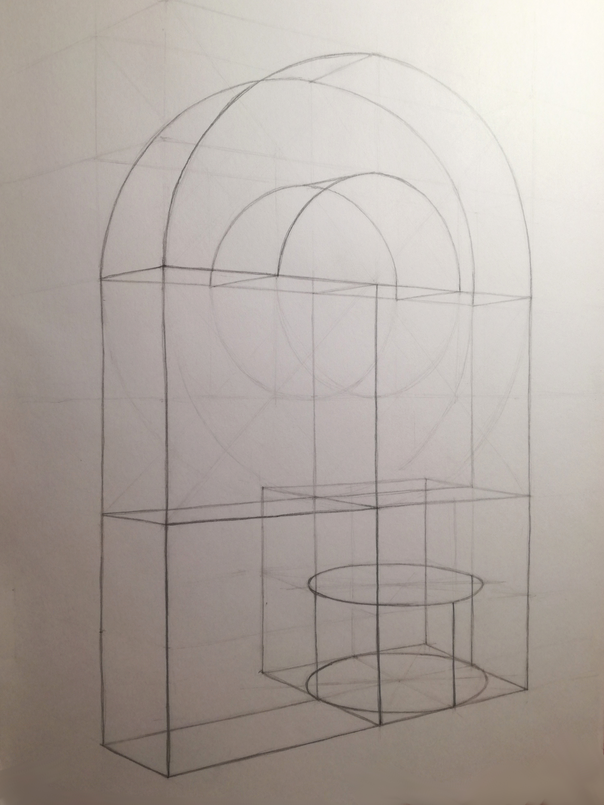

Rajzok
Sokféle
technikával rajzolok, szeretek újakat kipróbálni és különféle
technikákat kombinálni. Itt látható rajzaim között vannak grafikák,
pasztell-színesceruza rajzok és akvarell ceruzás rajzok. Szeretek
aprólékosan, realisztikusan dolgozni.
Festmények
Többnyire vászonra festek akrillal, ez a kedvenc technikám,
de szoktam vízfestéket is használni és kipróbáltam már az olajfestéket is.
Szeretek aprólékosan minden kis részletet kidolgozni, kedvenc témám a
vízpartok.
Számítógépes grafikák
Az itt látható kör alakú munkáim megrendelésre, többnyire
üveglencsés ékszerekhez készültek vektorgrafikus programban. Van köztük egy
logóterv, mely a régi iskolám 20 éves fennállásának megünnepléséhez
készítettem, ezt meghívókra, pólókra és pecsétre is felhasználták. A molinóterv
szintén erre az alkalomra készült és az iskola bejáratát jelenleg is díszíti.
Egyetemi rajzok
Az egyetemen a rajz alkalmassági vizsga előkészítőjén és
szabadkézi rajz órán is készültek rajzaim, amikre büszke vagyok. Vannak köztük
grafit- és színes ceruzás rajzok is.
|
|

|

|
Fotók
Hobbi szinten fotózok is, nagyon szeretek utazni, szép
helyeken kirándulni, ekkor mindig sokat fotózok, és ezeket a képeket sokszor
festményként is elkészítem később.
Egyéb
Ide gyűjtöttem össze egyéb munkáimat, amikre büszke vagyok.
Vannak itt alkoholos filccel készített képeim, horgolt munkáim, kis
ajándéktárgyak, süthető gyurma figurák és pályamunkáim. Kétszer is indultam rajz és vizuális kultúra
OKTV-n, melyen az első fordulóban egy előre megadott témában kellett
pályamunkát készíteni. Egyik évben egy képzeletbeli Európa fesztivál
kabalafiguráját terveztem meg és készítettem el agyagból, másik évben egy határon
túli magyar rendezvény prospektusát szerkesztettem meg.
|